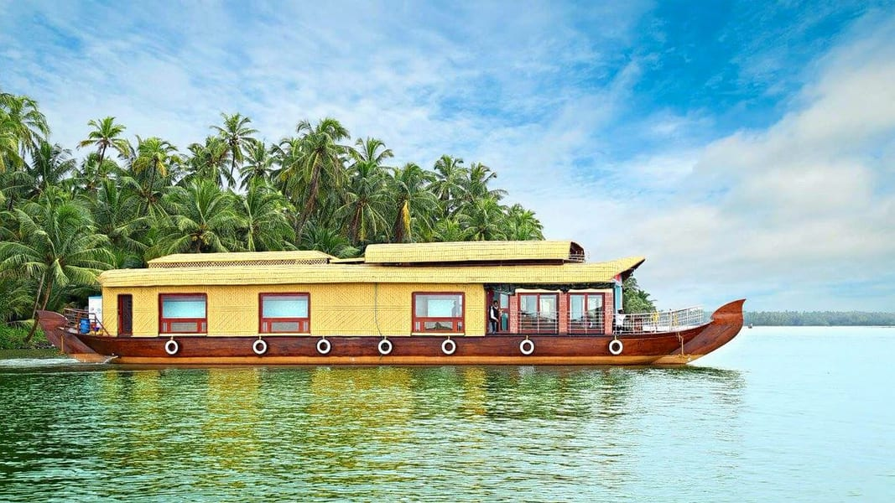
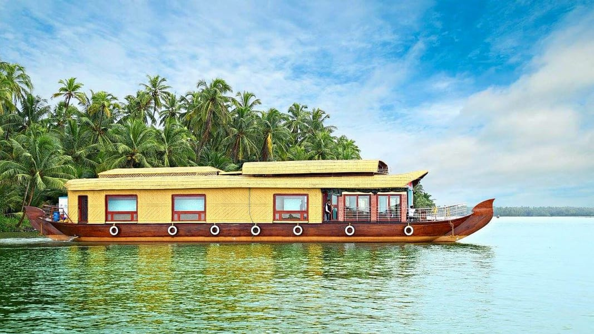

Top destinations in Kasargod
Off the radar for commoners and the land of exquisite folk art, tourist places in Kasaragod are reserved for hardcore and offbeat travelers in troops, pair or alone any time of the day and year. Early morning while your vision is still hazy your ears will automatically attune to the blissful soundscape.
Hosting numerous forts, wildlife sanctuaries, temple protected by a ‘croc’ - say the locals and magnificent hills, Kasaragod is uptown in all aspects. The ultimate traveling destination, has it all to enchant you. The natives are very friendly and the harmony between people of various religions is to be highlighted.
The 300 years old defensive mechanism which is
the largest and well-preserved fort makes it one of the best Kasaragod tourist
place. You can get an enthralling view of the mesmerizing Arabian sea from the
fort’s observation tower which was once used to fire the cannons!

A paradise for nature lovers and a fine ranked in the list of tourist places in Kasaragod. It is a natural habitat of some underrated fauna like a slow turtle, the prickly porcupine, Malabar hornbill, Slender loris, and the cute wild jungle cat.
If wilderness attracts you, this locale is a must visit for some great wildlife photography.

Previously known as Madathumala, situated 750 meters above sea level, this destination boasts of some of the marvelous trekking trails of about two and a half kilometers with a cave at the summit. If seeking leisure the greens of shola woods and monsoon forests have all their natural beauty to offer you.

An ideal locale for a peaceful vacay! If rare and unexplored fauna catches your attention then you must visit this beach in the monsoon season to watch some olive ridley turtles. Watch the sand turn golden and the sun setting with vivid colors.

A beautiful lazy backwater destination will set a pace to your day, this locale is a favorite spot for tourists seeking seclusion. The lush green groves and emerald green waters add on to the mesmerizing picturesque.

